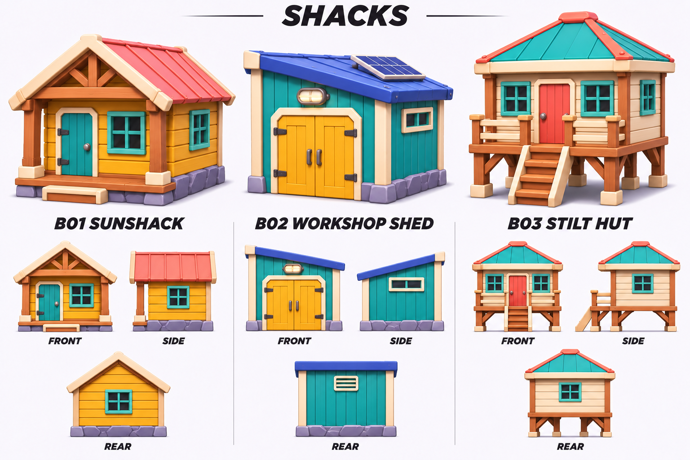
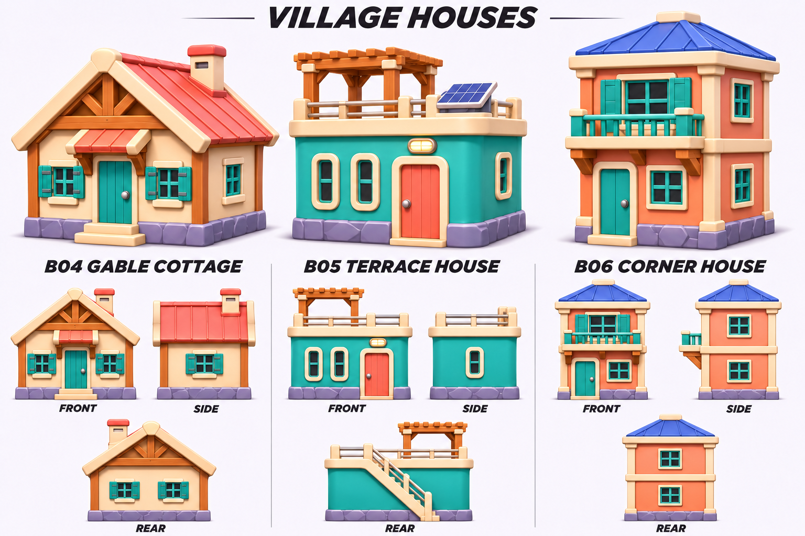
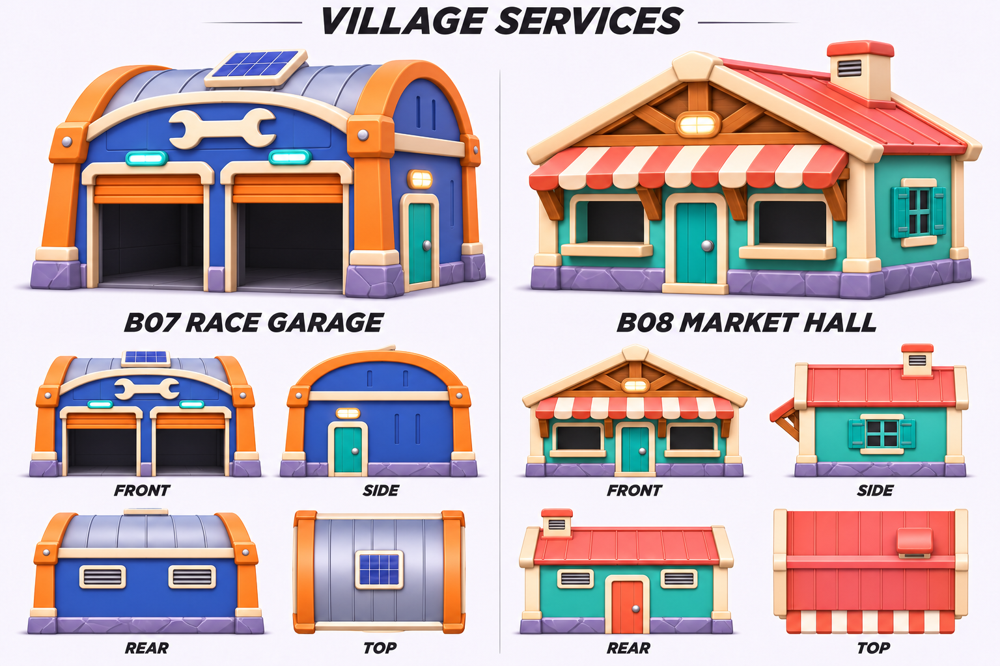
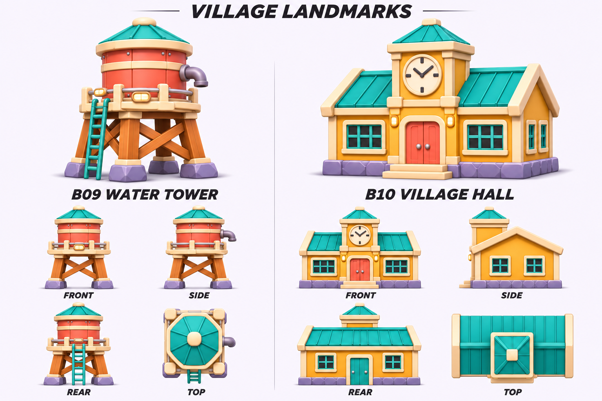

Sunshack
Porch shack with mustard timber, coral gable roof and teal openings.
4 × 3 × 3.3 mMain body W × D · total height
Read modeling briefTen building concepts that share the original buggies’ bold colors and the environment kit’s chunky shapes: timber shacks, small homes, village services and recognizable landmarks.

Porch shack with mustard timber, coral gable roof and teal openings.
4 × 3 × 3.3 mMain body W × D · total height
Read modeling briefTurquoise utility shed, mustard double doors, cobalt mono-pitch roof.
4 × 3.5 × 3.3 mMain body W × D · total height
Read modeling briefCream raised timber hut with teal hip roof, coral door and a veranda.
4 × 4 × 4.6 mMain body W × D · total height
Read modeling brief
Cream cottage with coral roof, teal shutters and a small chimney.
6 × 5 × 4.5 mMain body W × D · total height
Read modeling briefTurquoise flat-roof home with coral entry, rooftop pergola and solar panel.
5 × 5 × 4.5 mMain body W × D · total height
Read modeling briefApricot two-story home with cobalt hip roof and teal balcony.
5 × 4 × 6.5 mMain body W × D · total height
Read modeling brief
Two-bay cobalt-and-orange garage with a silver curved roof.
9 × 7 × 4.8 mMain body W × D · total height
Read modeling briefMint shop with a coral roof and a striped full-width awning.
8 × 5 × 4.2 mMain body W × D · total height
Read modeling brief
Coral cylindrical tank with teal conical cap on four timber supports.
4 × 4 × 8 mMain body W × D · total height
Read modeling briefMustard village hall with a teal roof and integrated clock tower.
8 × 6 × 7.5 mMain body W × D · total height
Read modeling brief